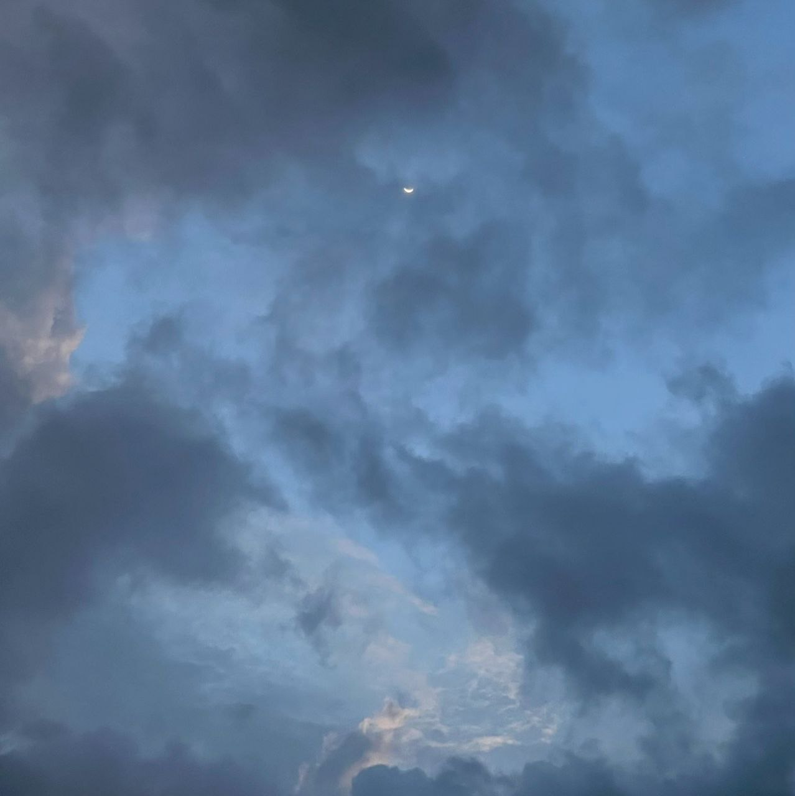
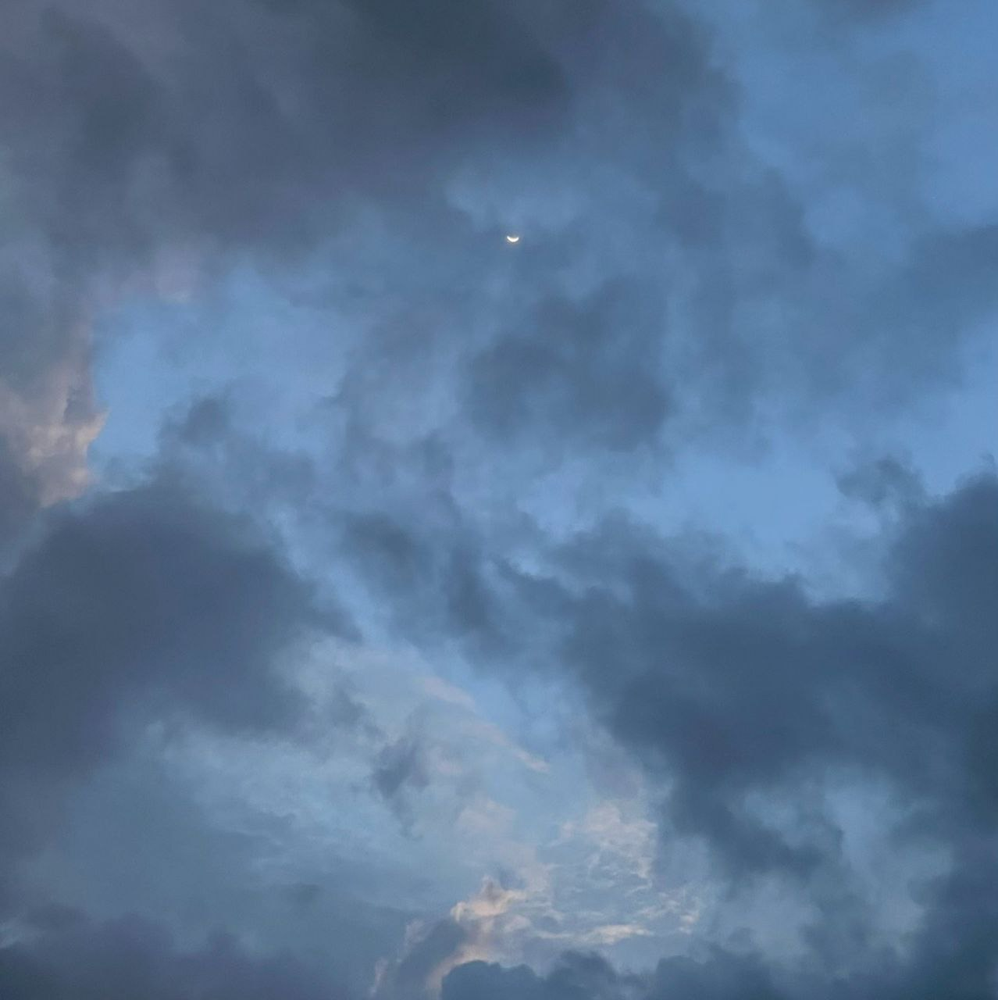

• welcome to natasha's blog! •
Capturing a moment in time isnt just about securing a memory—it can help me to appreciate life more every day. I get the joy that comes from looking at these things without having to own them (or buy them, for that matter) —and the fun of showing them to friends with just a few clicks. Photographs are another easy way to record little moments that are precious but easily forgotten. Here are few random photos I have captured;


 
